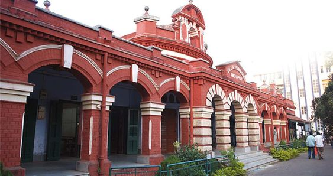
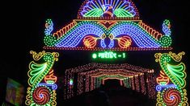

About Paschim Mednipur
This district is home to various traditional art forms, including the Jhumur dance and the Baul tradition. The district's rural life and cultural heritage have been depicted in various forms of literature and art.

